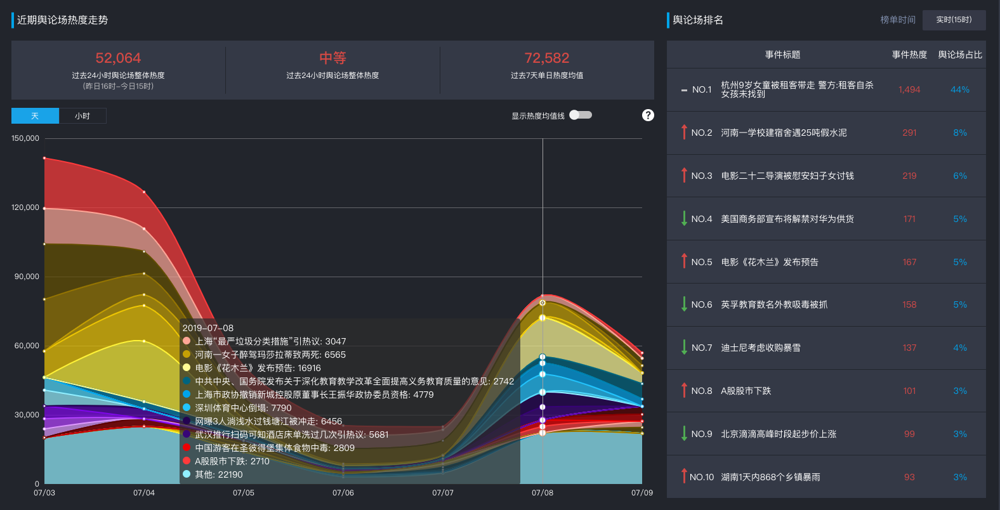
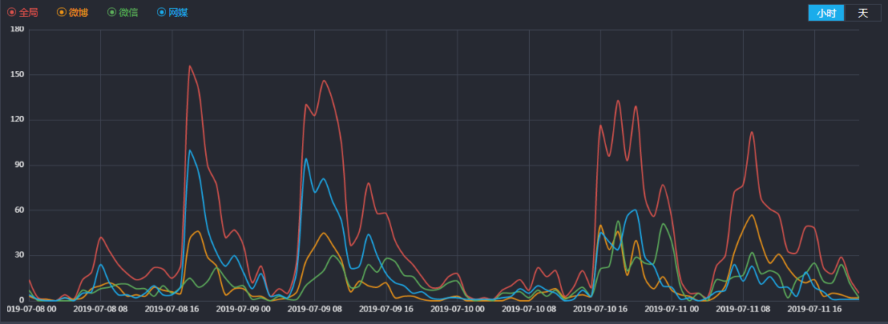
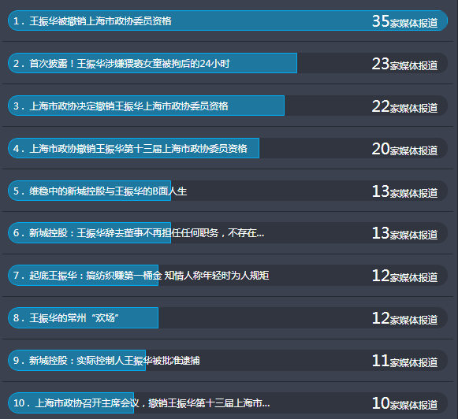
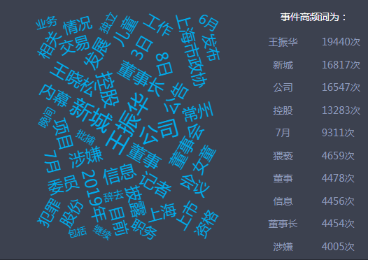

黑天鹅事件爆发至今，新城控股(601155.SH)经历了在悬崖边游走的七个多日夜。
不仅信披问题、内部交易被质疑，其股价也随事态发展持续震荡。7月9日，新城控股早盘打开跌停板，全天跌幅8.90%，收盘价报28.35元，成交额80.09亿元。截至目前，其总市值639.78亿元，累计蒸发323.5亿元。
7月8日深夜，沉寂多时的新城控股连发七条公告，就公司前董事长王振华涉案后的种种风波进行回应。
新城控股称，公司在收到正式法律文书确认王振华涉案事宜后，及时履行了有关信息披露义务。同时，公司及内幕信息知情人均不存在内幕信息提前泄露及违规交易(包括集合竞价及大宗交易)的情况。
而陷舆论漩涡的王振华已向公司递交辞职报告，因个人原因申请辞去公司第二届董事会董事、提名委员会委员、战略委员会主任委员职务。同时，董事会同意补选曲德君为公司第二届董事会董事候选人。
新城控股的每一次回应，基本上都能在网络媒体、微信、微博上引起很大风波，评论量、转发量都极大，显示了人们对于此事的关注程度。

由图中可看出，网媒在此次事件中扮演着较为核心的位置，基本上在每一个峰值网媒都起着主导地位。新城控股相关事件的舆论分别在在8日下午、9日上午、10日下午和11日上午都出现了峰值。不论是微信、微博还是网媒，其运动轨迹都是波动不稳定的。但总体而言，全局的舆论力量是在逐渐下降的，说明由黑天鹅导致的舆论风波正在慢慢过去。


以标题为单位，按照网媒的报道次数取前十名的标题。网媒相关标题出现的次数，在一定程度上可以反映该媒体所关注的该事件的重点在何处。“王振华被撤销上海市政协委员资格”基本上处于前五的位置，说明了舆论对于该事件最后的结果更为关注。
词云图反映出王振华与新城紧密联系在一起，人们在提到王振华时自然离不了谈起新城。虽然新城正在努力“切割”与王振华的关系，早在7月4日，公司官网上就已删除与王振华有关的新闻图片，但事实证明，企业家特别是民营企业家的形象，与企业紧密相关。无论怎样切割，王振华作为企业的创始人，其言行举止早与新城控股捆绑在了一起，这也是新城控股一时难以跳出舆论漩涡的原因之一。
媒体评“王振华猥亵女童”：恋童癖是病 不是理由
转发：#律师实名举报新城控股# 直指其涉嫌证券违规
早财经丨律师实名举报新城控股王振华涉嫌证券违规
王振华常州往事：王三万儿子、校长女婿、周某某情人?
白岩松再评猥亵女童案，有句话细思极恐....
“猥亵女童案”周某疑为王振华情妇，知情人士称其有吸毒史
新城控股股权质押告急 又遭举报信披违规
董事长猥亵儿童案:中间人周某疑为王振华情妇,更多细节曝光
上海市政协召开主席会议，决定撤销王振华上海市政协委员资格
新城控股：曲德君候补进董事会，董事王振华、独董Aimin Yan辞职
主流媒体连连追问呼吁严惩,犯罪嫌疑人王某某与王振华对上号还是各路媒体向上海警方二次求证后确认的。“上市公司董事长涉嫌猥亵女童”事件有太多关键词刺痛着公众神经。人民日报、新华社、央视等多家权威媒体分别在微博上置评发问，呼吁“严惩”。此次事件未来走向还未可知，本号将持续关注。